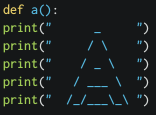
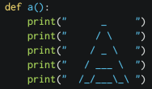
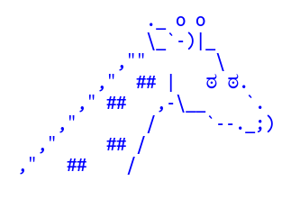

Materiais
Revisão (15 min.)
Comece a aula fazendo uma revisão da aula anterior, resgatando o comando print. Veja se eles lembram como tudo funciona, senão faça breve uma revisão. Utilize o exemplo aula4-exemplo1.py como idéia para retomar o conteúdo.
Prossiga na recapitulação de dois conceitos-chave da aula anterior: entrada e saída. Uma sugestão é um programa de “questionário” (o programa chamado aula4-entrevista.py na qual eles irão fazer um programa para entrevistar o usuário).
Deixe-os começar a fazer o programa de entrevista e recomende, apresentar para os familares e colegas.
ASCII ART
Depois da revisão, apresente o que eles irão ver na aula, vamos utilizar a função print para fazer um programa que irá criar novas fontes de caracteres, apenas utilizando caracteres.
Algum exemplos
_ _ _ __ _ /\
|_) |_) / \ /__ |_) /\ |\/| /\ |_
| | \ \_/ \_| | \ /--\ | | /--\ |_
____ ____ ___ ____ ____ _ __ __ _ //\
| _ \ | _ \ / _ \ / ___| | _ \ / \ | \/ | / \ |/_\|
| |_) | | |_) | | | | | | | _ | |_) | / _ \ | |\/| | / _ \ | ____|
| __/ | _ < | |_| | | |_| | | _ < / ___ \ | | | | / ___ \ | _|_
|_| |_| \_\ \___/ \____| |_| \_\ /_/ \_\ |_| |_| /_/ \_\ |_____|
Pergunta se eles saberiam criar a visualização acima apenas usando a função print?
print(" ")
print(" _ _ _ __ _ /\\")
print("|_) |_) / \ /__ |_) /\ |\/| /\ |_ ")
print("| | \ \_/ \_| | \ /--\ | | /--\ |_ ")
print(" ")
Eficiência
Além da observação vista na aula anterior, os bons programadores sabem ser eficiêntes, ou seja, não fazem duas vezes o mesmo trabalho! Imagine o seguinte cenário: teremos que repetir 10 vezes uma letra. Existe algum jeito mais fácil de fazer o código do que usar centenas de prints?
Funções
Apresente as funções como mecanismo de facilitar a vida do programador, mostre um exemplo do uso de funções:
(python)
Tópicos importantes sobre funções
| ERRADO | CERTO |
|---|---|
|  |  |
O termo correto para este “recuo em relação a margem” é identação (ver definição). Se prepare para resolver muitos problemas deste tipo enquanto tiver orientando os alunos, treine seu olhar para este tipo de análise rápida.
IndentationError: expected an indented block
Exercicios:
Lembretes (ou comentários)
As vezes faz-se necessário explicar com mais detalhes trechos de código, por exemplo, qual motivo de estarmos declarando uma função chamada a()? Nada melhor que explicar na nossa língua nativa, o português! Ensine aos alunos que é possível adicionar um comentário (ou lembrete) para descrever melhor o código.
Reserver um tempo na aula para apresentar, agora formalmente, as duas maneiras de se fazer isso:
# isto é um comentário de uma linha
"""
isto é um comentário, qualquer coisa
que eu escrever aqui o computador não vai
interpretar, posso falar qualquer, mas qualquer coisa
"""
'''
isto também é um comentário,
só que com aspas simples
funciona muito bem, só não posso confundir ou é
aspas simples ou aspas duplas.
'''
Oriente os alunos a inserirem nos códigos, a partir de agora, comentários com pequenos textos explicativos.
Código de referência: aula-4-comentários.py
Símbolos
Siga a aula com uma ativade que ira expandir as possibilidades de caracteres, até agora utilizamos as letras do alfabeto (de a a z) e alguns caracteres especiais como o /, _, \.
Nesta seção iremo ver:
Palavras-chave: caracteres UTF-8 e funções: chr() e ord() do Python.
Demonstre para a sala que todo caractere possui um código associado, por exemplo, a letra a possui o código 97, a letra b o código 98 e assim por diante.
Letra em código: ord()
(ord)
Código em letra: chr()
(chr)
Experimente outros valores com eles, agora sugira um desafio para a sala:
Exercício 1: passe os seguintes códigos para os alunos.
Exercício 2: abra o arquivo aula4-simbolos.py e peça para eles anotarem pelo menos 10 códigos referentes aos símbolos.
Finalize a aula voltando na atividade de desenhar, e peça para eles criarem novos desenhos a partir dos símbolos que eles aprenderam.
Dicas:
O arquivo aula4-desenhos-utf8.py contém exemplos disso.
Dica: @utf8art (no Twitter) possui muitos exemplos de desenhos para sugerir nas aulas.
Comentários: Educador, clique no link abaixo (Show Comments) e utilize este espaço para fazer comentários sobre este plano
Show Comments